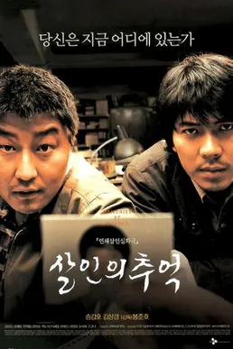

The genetics
Genetics enters Bong Joon-ho's film as forensic DNA analysis at the moment it was becoming available. After months of beatings, false confessions and failed stakeouts, the detectives obtain a semen sample from a victim, and because South Korea cannot yet perform DNA tests, they send it to the United States for comparison with their prime suspect. The test is the investigation's last hope, and its inconclusive result is the turning point: it neither convicts nor clears Hyeon-gyu, the detectives' certainty collapses, and Seo, the scientific detective, is reduced to holding a gun to the suspect's head. The film presents DNA science neutrally, as a powerful tool that the police of the 1980s could neither command nor interpret, against a background of brutal and incompetent policing. The film is based on the Hwaseong serial murders, in which evidence was actually sent to Japan; the real killer, Lee Choon-jae, was identified by DNA in 2019, sixteen years after the film.
The story
In 1986, two women are found raped and murdered in the countryside near a small South Korean town. The poorly equipped local police, led by detectives Park Doo-man and Cho Yong-koo, beat suspects and fabricate evidence to extract confessions, first from Baek Kwang-ho, a young man with an intellectual disability. Seo Tae-yoon, a methodical detective from Seoul, joins them; he finds a third victim and deduces that the killer strikes on rainy nights against women wearing red, while a female officer notices that the same song is requested on the local radio before each murder. The trail leads to Hyeon-gyu, a clerk at the local mine with soft hands, who sent in the requests. With no hard evidence, the police send semen from a new victim to the United States for DNA comparison, since Korea cannot yet do the test. After another girl is murdered, Seo is about to shoot Hyeon-gyu when the results arrive: inconclusive. In 2003, Park, now a salesman, returns to the first crime scene, where a girl tells him an ordinary-looking man recently stood reminiscing about something he once did.